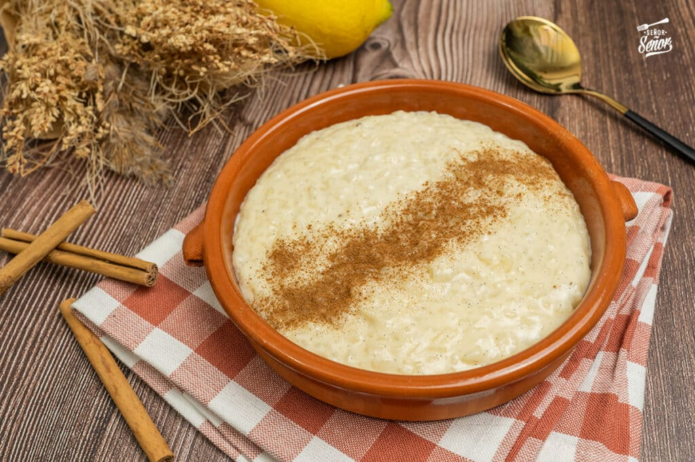

Ingredientes:
- 100g. de arroz (preferentemente doble carolina o para risotto)
- 1 litro de leche
- 150g. de azúcar
- canela (en rama y en polvo)
- cáscara de limón
Receta paso a paso:
- Vamos a empezar poniendo en una olla nuestro arroz junto con el litro de leche. Usamos tanta cantidad de leche para que el arroz nos quede bien bien cremoso.
- Luego vamos a cortar unos pedazos de cáscara de limón (tengan en cuenta lavar bien el limón para quitar todas las suciedades que pueda tener la cáscara) y los vamos a agregar a la olla.
- También vamos a agregar al arroz con leche una ramita de canela. Si podemos conseguir que sea en rama, mucho mejor ya que en esta instancia la vamos a usar para aromatizar durante la cocción del arroz.
- Esta mezcla, antes de ponerla al fuego, la vamos a dejar reposar entre 30 y 60 minutos. Sepan que un arroz con leche reposado es un arroz con leche feliz! Al margen del chiste, este tiempo sirve para aromatizar y se embeba bien el arroz con los sabores de la canela y el limón. Así cuando lo cocinemos nos va a quedar mucho más sabroso.
- Ahora sí, luego de este tiempo, vamos al fuego. Le dejamos todo lo tiene adentro y lo vamos a tapar hasta que esté cerquita de hervir. Importante quedarse cerca del arroz!
- Una vez que esté cerca del hervor, destapamos y comenzamos a revolver cuidadosamente. Pueden dejarlo un rato solo, pero lo ideal es estar revolviendo lo más posible.
- El momento de agregar el azúcar, es cuando prueben el arroz y sientan que está al dente. Hay que seguir revolviendo el arroz con leche hasta que la misma comienza a evaporarse y el azúcar comienza a generar que la mezcla se ponga más espesa.
- Cuando veamos que el arroz con leche esté cocido, apagamos el fuego, sacamos los pedazos de canela y de cáscara de limón, y lo dejamos reposar unos minutos en la olla mientras lo batimos un poco más intensamente para que se termine de evaporar el líquido que queda y sea más cremoso aún.
- Luego lo llevamos a la heladera por 20 o 30 minutos y listo! Solo queda servirlo! Recomiendo mucho tirarle un poco de canela en polvo por encima para que termine de darle el toque mágico. Este arroz con leche les va a encantar!
